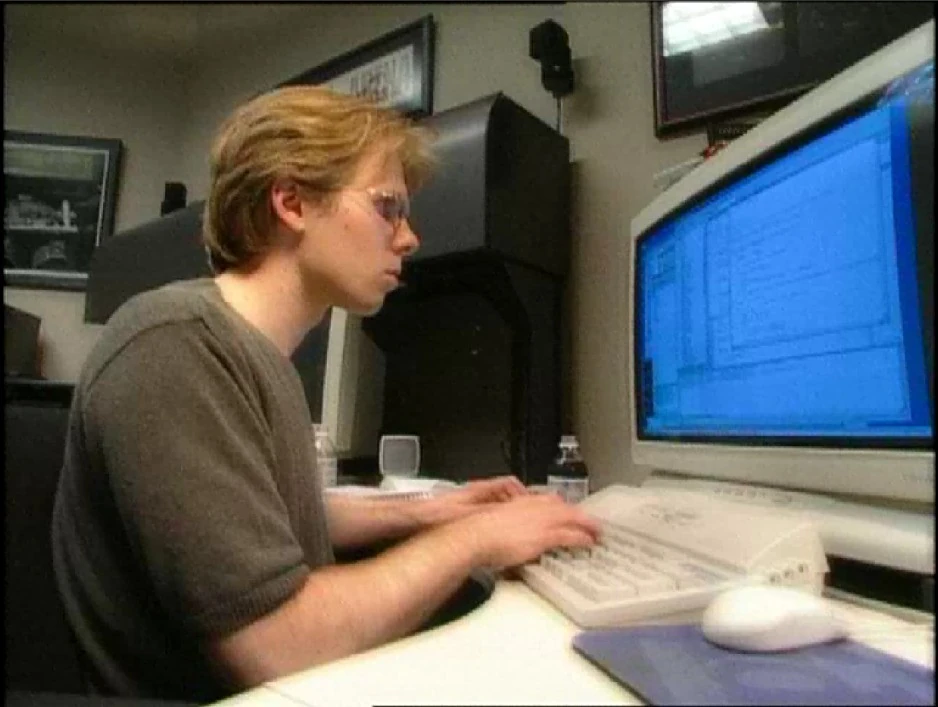

The Carol Vale Project is the first research task to help discover famous and influential people in your area of enrichment. What makes them stand apart from the rest of humanity over time? What were their achievements? How did they become leaders in their field? What personal strengths and characteristics did they possess?
Being part of the Enrichment Program is an opportunity for you to identify and explore your passions and most importantly, to learn that while it's important to develop your skills and passions, it is equally important to build qualities such as persistence, determination and a thirst for learning. Carol Vale embodies these characteristics, which she actively uses to make the world a better place.
For part 2 of the project, we had to select 10 great thinkers in our area and create a short summary of their contributons
Here are the great thinkers that I have chosen:
Linus Torvalds
Creator of Linux, a highly versatile operating system kernel that has been used widely among operating systems.
Ada Lovelace
Pioneered what we call modern computing today through using an experimental computer for different applications.
Alan Turing
Credited as the father of artificial intelligence as he hypothesised that anything that can be humanly done can be done by a machine. He also placed this into practice and created the Turing machine and helped aid the allies in World War 2.
Dennis Ritchie
One of the creators of the C programming language, one of the first widely used programming languages, and co-creator of Unix, one of the first operating systems.
Tim Berners-Lee
Inventor of the World Wide Web, HTML, URL system, and HTTP, which is used billions of times every day.
Gabe Newell
President of the game company “Valve” that has delivered many contributions to the gaming world to change how it is now with the help of the games that they have made as well as the game platform “Steam”
Larry Page
Co-founder of Google, the largest search engine and one of the largest software companies in the world. Google has made an immense impact on most of the world's population, and it is probably the first thing that comes to mind when you think about the internet.
Shigeru Miyamoto
Videogame director at Nintendo responsible for most of Nintendo's most popular titles including Super Mario, The Legend of Zelda, and much more.
Guido van Rossum
Creator of the programming language “Python” which serves as a gateway for many programmers to start their coding journey. It has been very helpful to me personally as it served as one of my first experiences in line coding.
John Carmack
Co-founder of “Id Software” and responsible for the development of many of the first influential games such as “Wolfenstein”, “DOOM”, and “Quake”. These games are some of the first ever made 3d first person shooters.
Part 3 of the project was about narrowing down the person we would choose. We did this by choosing 2 thinkers from our list, finding a quote from both of them, and then writing a personal reflection on the quote
Quote: “The programmers of tomorrow are the wizards of the future”
To me this quote signifies how the future coders and programmers will be doing things that to us now will seem like pure witchcraft. This is because technology is always changing and what we think is normal now may be completely different. Gabe Newell was able to change the way gaming and game development is viewed today through many ways including Valve’s many influential games and Steam which when it was released, popularised the idea of selling games online in a time where many people thought physical copies were the best medium. Today, Valve still holds a strong grip on game development as Steam is now the biggest digital video game distribution platform in the world. As for some of Valves games, each one of the titles that they release gains a remarkable amount of attention as they are all known to be very well crafted.
Quote: “A strong team can take any crazy vision and turn it into reality.”
To me this means that anyone who can put their mind to it can take any idea and turn it into a real thing. This is important because crazy visions and ideas are the things that challenge the normal ones and give the chance to change. It is probably something that they thought about a lot when making the games that they made and thus were able to use whatever ideas came to mind. Even today, a lot of the games that he made remain extremely popular and have evidently changed the way games are now.
For the final part of the project we had to choose a person and answer various things about the person. To present this I have decided to create a video in Minecraft as I thought it would be a unique way of presenting.
Thank you for taking the time to view my presentation